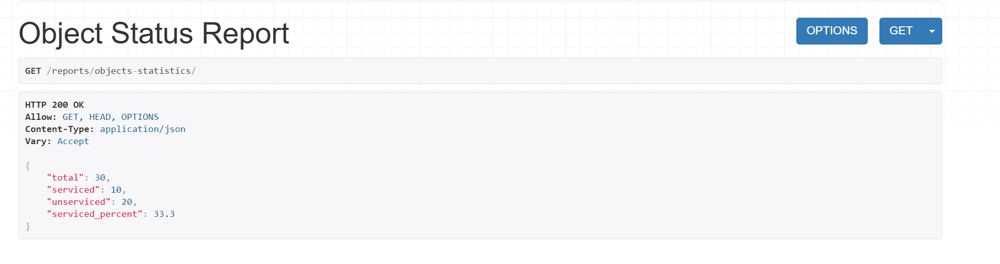
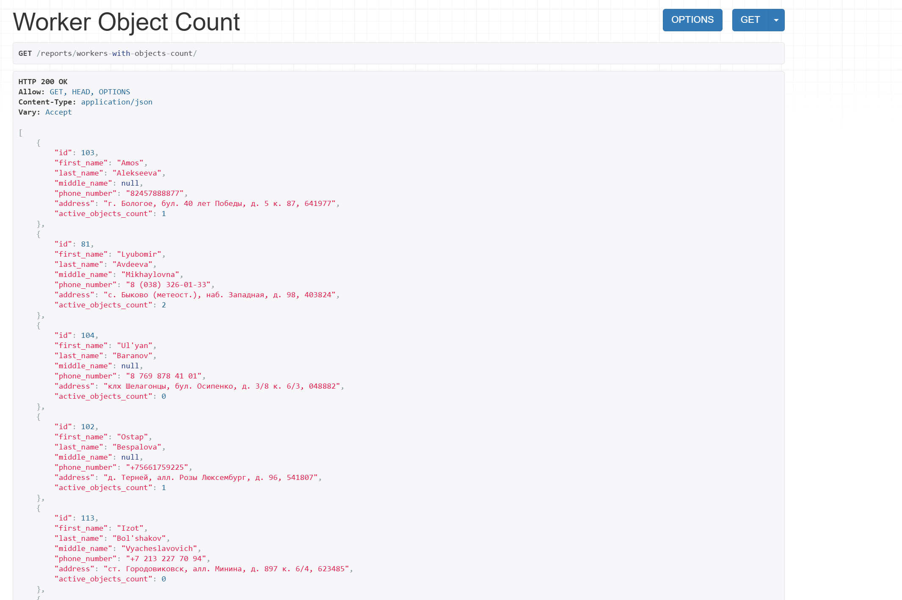
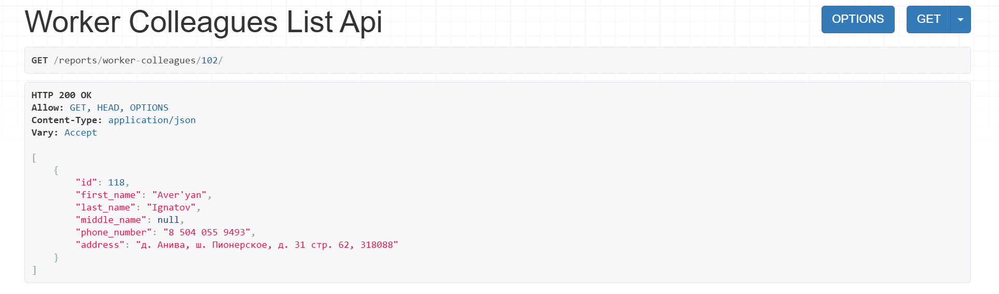
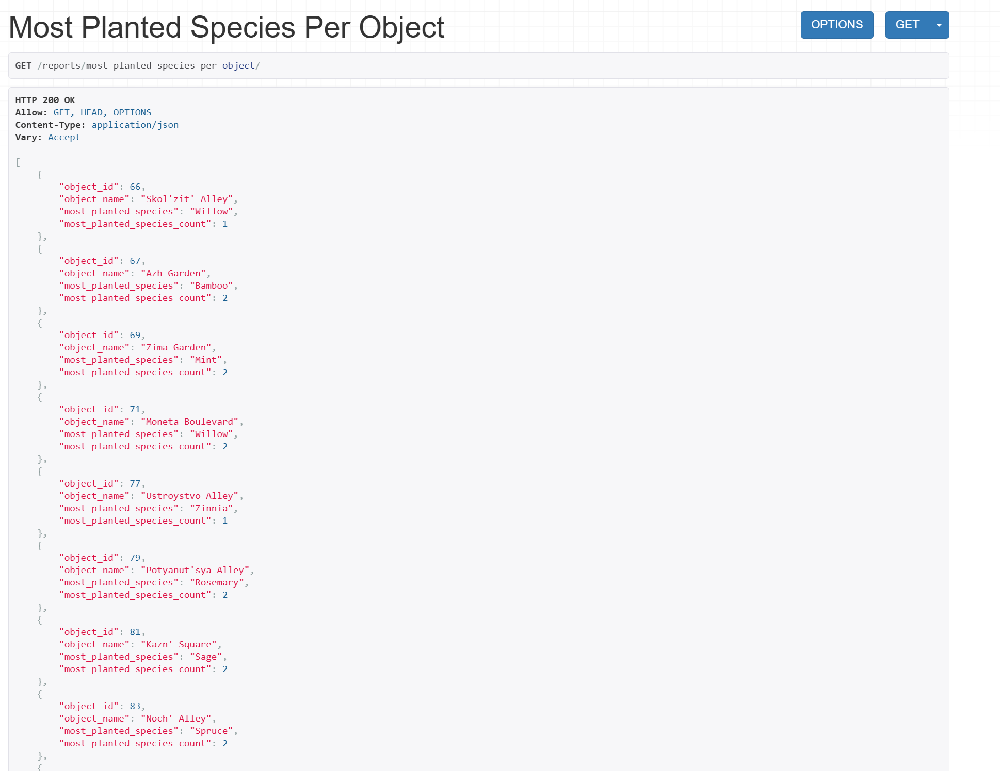
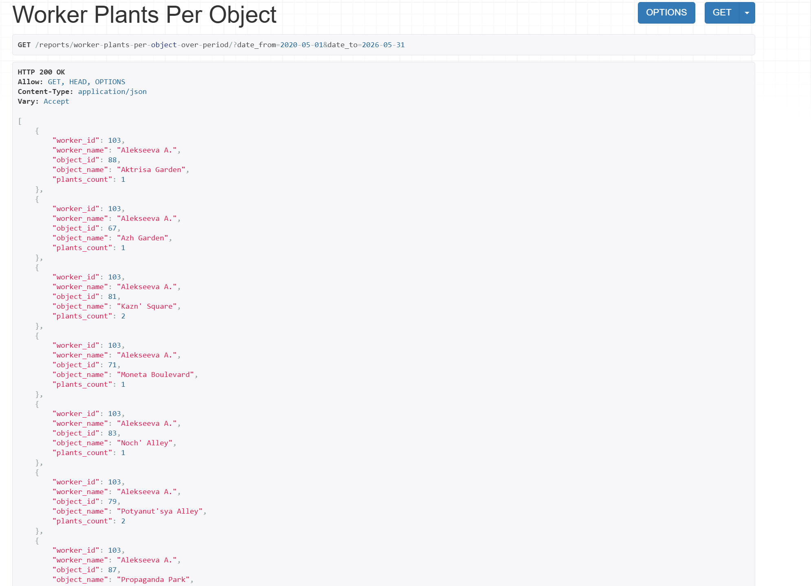
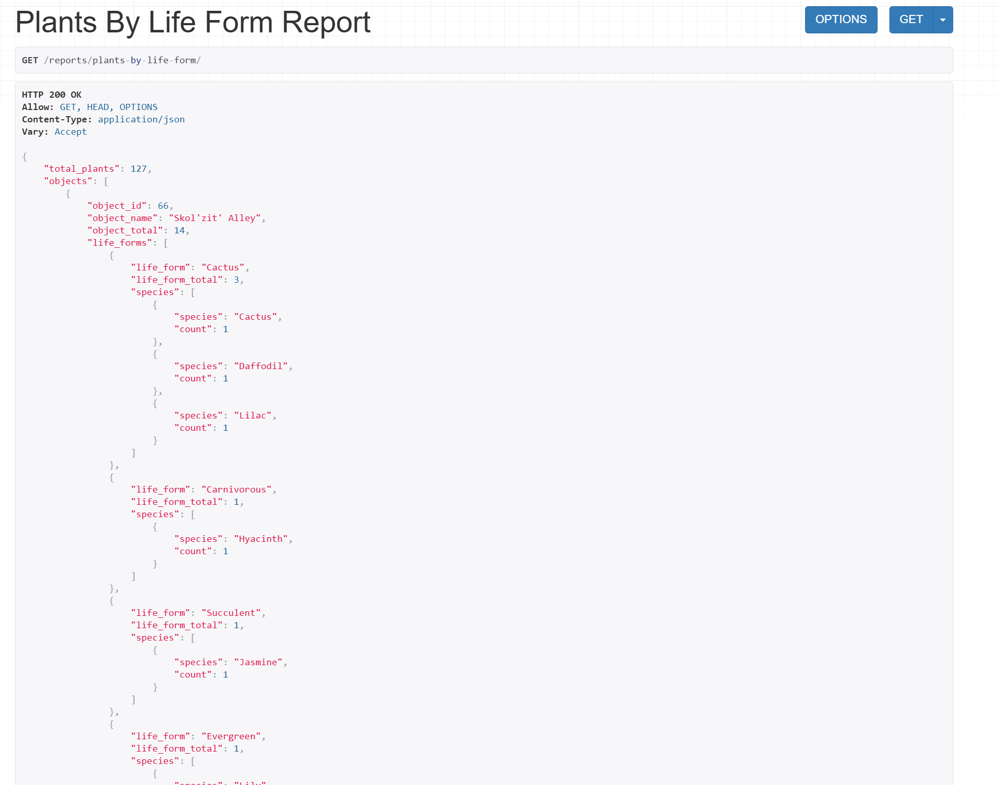

Запросы
Запросы¶
В тексте варианта были прописаны следующие запросы:
Перечень возможных запросов:
1. Вывести информацию о количестве обслуживаемых и необслуживаемых
объектов.
2. Для каждого сотрудника вывести количество объектов, которые он
обслуживает.
3. Для заданного сотрудника вывести список сотрудников, работающих на тех же
объектах, что и заданный.
4. Найти самый популярный по количеству высаженных единиц вид растения на
обслуживаемых объектах.
5. Для каждого сотрудника вывести количество обслуживаемых растений на
каждом объекте в заданный период времени.
Необходимо предусмотреть возможность получения отчета, в котором отражается
информация об обслуживаемых растениях по жизненным формам и видам по каждому
объекту с указанием их общего количества по видам, по объекту и суммарно по всем
объектам.
Для реализации данных запросов было решено сделать отдельное приложение для отчетных запросов под названием report_app.
У него были прописаны свои сериализаторы для сложных запросов, свои вью и соотвественно урлы, по которым лежат результаты этих запросов.
1. Вывести информацию о количестве обслуживаемых и необслуживаемых объектов.¶
Здесь сериализатор не требуется, во views.py:
class ObjectStatusReportView(generics.ListAPIView):
def get(self, request):
total = Object.objects.count()
serviced = Object.objects.filter(contracts__is_active=True).distinct().count()
return Response({'total': total,
'serviced': serviced,
'unserviced': total - serviced,
'serviced_percent': round(serviced / total * 100, 1) if total > 0 else 0
})
Результат:

2. Для каждого сотрудника вывести количество объектов, которые он обслуживает.¶
serializers.py:
class WorkerWithObjectsSerializer(serializers.ModelSerializer):
active_objects_count = serializers.SerializerMethodField(read_only=True)
class Meta:
model = Worker
fields = ["id", "first_name", "last_name", "middle_name", "phone_number", "address", "active_objects_count"]
def get_active_objects_count(self, obj):
return obj.object_assignments.filter(
end_date__isnull=True
).count()
views.py:
class WorkerObjectCountView(generics.ListAPIView):
serializer_class = WorkerWithObjectsSerializer
queryset = Worker.objects.all()
Результат:

3. Для заданного сотрудника вывести список сотрудников, работающих на тех же объектах, что и заданный.¶
views.py:
class WorkerColleaguesListAPIView(generics.ListAPIView):
serializer_class = WorkerSerializer
def get_queryset(self):
worker_id = self.kwargs['pk']
return Worker.objects.filter(
object_assignments__end_date__isnull=True,
object_assignments__object_id__in=ObjectWorkerAssignment.objects.filter(
worker_id=worker_id,
end_date__isnull=True
).values('object_id')
).exclude(
id=worker_id
).distinct()
Результат:

4. Найти самый популярный по количеству высаженных единиц вид растения на обслуживаемых объектах.¶
serializers.py:
class MostPlantedSpeciesPerObjectSerializer(serializers.Serializer):
object_id = serializers.IntegerField()
object_name = serializers.CharField()
most_planted_species = serializers.CharField()
most_planted_species_count = serializers.IntegerField()
views.py:
class MostPlantedSpeciesPerObjectView(APIView):
def get(self, request):
serviced_objects = Object.objects.filter(
contracts__is_active=True
).distinct()
results = []
for obj in serviced_objects:
species_stats = (
PlantPlacement.objects
.filter(zone__object_id=obj)
.values('plant__species__name')
.annotate(count=Count('id'))
.order_by('-count')
)
if not species_stats.exists():
continue
top_species = species_stats.first()
results.append({
'object_id': obj.id,
'object_name': obj.name,
'most_planted_species': top_species['plant__species__name'],
'most_planted_species_count': top_species['count']
})
serializer = MostPlantedSpeciesPerObjectSerializer(results, many=True)
return Response(serializer.data)
Результат:

5. Для каждого сотрудника вывести количество обслуживаемых растений на каждом объекте в заданный период времени.¶
serializers.py:
class WorkerObjectPlantCountSerializer(serializers.Serializer):
worker_id = serializers.IntegerField()
worker_name = serializers.CharField()
object_id = serializers.IntegerField()
object_name = serializers.CharField()
plants_count = serializers.IntegerField()
views.py:
class WorkerPlantsPerObjectView(APIView):
def get(self, request):
date_from = request.query_params.get('date_from')
date_to = request.query_params.get('date_to')
if not date_from or not date_to:
raise ValidationError(
"Необходимо передать date_from и date_to (YYYY-MM-DD)"
)
queryset = (
PlantWorkerAssignment.objects
.filter(
date__range=[date_from, date_to],
plant__placements__zone__object_id__contracts__is_active=True
)
.values(
'worker_id',
'worker__last_name',
'worker__first_name',
'worker__middle_name',
'plant__placements__zone__object_id__id',
'plant__placements__zone__object_id__name'
)
.annotate(
plants_count=Count('plant', distinct=True)
)
.order_by(
'worker__last_name',
'plant__placements__zone__object_id__name'
)
)
results = []
for row in queryset:
full_name = f"{row['worker__last_name']} {row['worker__first_name'][0]}."
if row['worker__middle_name']:
full_name += f"{row['worker__middle_name'][0]}."
results.append({
'worker_id': row['worker_id'],
'worker_name': full_name,
'object_id': row['plant__placements__zone__object_id__id'],
'object_name': row['plant__placements__zone__object_id__name'],
'plants_count': row['plants_count']
})
serializer = WorkerObjectPlantCountSerializer(results, many=True)
return Response(serializer.data)
Результат:

6. Отчет об обслуживаемых растениях по жизненным формам и видам¶
views.py:
class SpeciesReportSerializer(serializers.Serializer):
species = serializers.CharField()
count = serializers.IntegerField()
class LifeFormReportSerializer(serializers.Serializer):
life_form = serializers.CharField()
life_form_total = serializers.IntegerField()
species = SpeciesReportSerializer(many=True)
class ObjectPlantReportSerializer(serializers.Serializer):
object_id = serializers.IntegerField()
object_name = serializers.CharField()
object_total = serializers.IntegerField()
life_forms = LifeFormReportSerializer(many=True)
class PlantsSummaryReportSerializer(serializers.Serializer):
total_plants = serializers.IntegerField()
objects = ObjectPlantReportSerializer(many=True)
serializers.py:
class PlantsByLifeFormReportView(APIView):
def get(self, request):
queryset = (
PlantPlacement.objects
.filter(
zone__object_id__contracts__is_active=True
)
.values(
'zone__object_id__id',
'zone__object_id__name',
'plant__species__name',
'plant__species__life_form__name'
)
.annotate(count=Count('plant', distinct=True))
)
report = defaultdict(lambda: {
'object_total': 0,
'life_forms': defaultdict(lambda: {
'life_form_total': 0,
'species': []
})
})
total_plants = 0
for row in queryset:
obj_id = row['zone__object_id__id']
obj_name = row['zone__object_id__name']
species = row['plant__species__name']
life_form = row['plant__species__life_form__name']
count = row['count']
report[obj_id]['object_name'] = obj_name
report[obj_id]['object_total'] += count
report[obj_id]['life_forms'][life_form]['life_form_total'] += count
report[obj_id]['life_forms'][life_form]['species'].append({
'species': species,
'count': count
})
total_plants += count
objects_result = []
for obj_id, obj_data in report.items():
life_forms_list = []
for lf_name, lf_data in obj_data['life_forms'].items():
life_forms_list.append({
'life_form': lf_name,
**lf_data
})
objects_result.append({
'object_id': obj_id,
'object_name': obj_data['object_name'],
'object_total': obj_data['object_total'],
'life_forms': life_forms_list
})
serializer = PlantsSummaryReportSerializer({
'total_plants': total_plants,
'objects': objects_result
})
return Response(serializer.data)
Результат:
